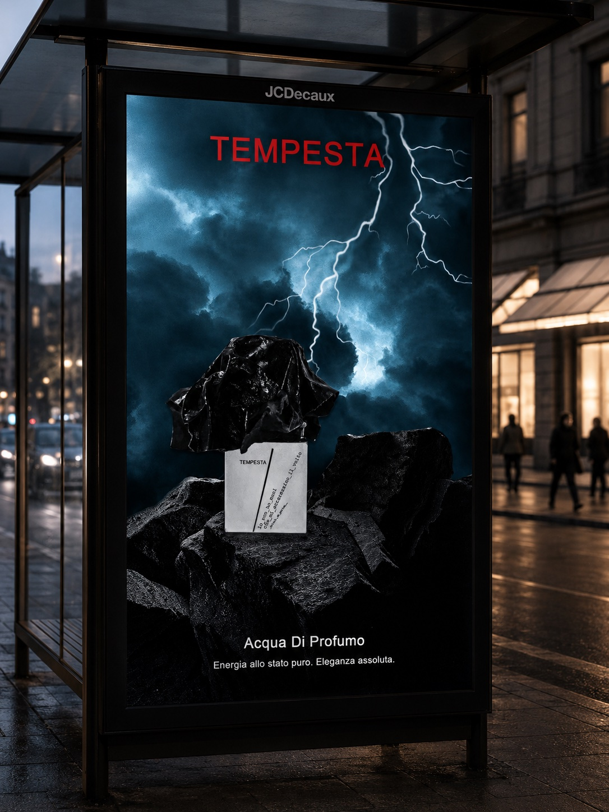

Affiche de Parfum
Design Graphique

Dans le cadre de ce projet Photoshop, j'ai conçu une affiche publicitaire pour un parfum de niche imaginaire : Tempesta. Le nom, qui signifie "tempête" en italien, symbolise une dualité entre force et sophistication — une tempête intérieure, puissante et élégante à la fois.
J'ai travaillé sur la composition visuelle sous Photoshop en créant une ambiance gothique et dramatique : ciel orageux, pleine lune, château sinistre en arrière-plan (AC13.02 — Produire des pistes graphiques et des planches d'inspiration). J'ai intégré le flacon avec des ombres, des reflets et des ajustements de lumière pour le fondre naturellement dans la scène (AC13.03 — Créer, composer et retoucher des visuels).
Ce projet m'a permis de maîtriser les effets d'ombre et de profondeur sous Photoshop, et de comprendre comment la lumière, la composition et la typographie peuvent ensemble transmettre une émotion — ici la peur et le mystère.
Apprentissages Critiques : AC13.02 · AC13.03